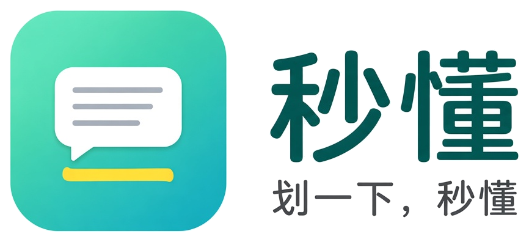

选中读不懂的词、句子或公式，解释就停在它旁边。请求从扩展后台发出，密钥留在这台浏览器里。
接口
用 OpenAI 兼容的地址。内置 DeepSeek、豆包、千问、Kimi、智谱、MiniMax、文心、混元、星火、阶跃星辰、OpenRouter、硅基流动、OpenAI 等接口。
获取密钥：打开控制台
ima 知识库
配置后点卡片上的云上传图标，解释会直接推送到 ima 笔记（可选指定笔记本）。不配置则降级为下载 Markdown 文件。凭证在 ima 开放接口页 获取，保存在这台浏览器里。
解释
默认用简体中文，并按选中文字所在的段落来解释，而不是脱离语境的词典义。
什么时候出现
快捷键 Alt+Shift+E（Mac 上是 Option+Shift+E）。想改键位，打开浏览器的扩展程序快捷键页：chrome://extensions/shortcuts。Esc 关闭卡片，点卡片外面也会关闭，除非先点了图钉。
这些网站上停用
一行一个域名。写 example.com 会连同它的子域名一起停用，*.example.com 同样。以 # 开头的行是注释。
最近查过
只存在这台浏览器的本地存储里。导出不会带上 API Key。